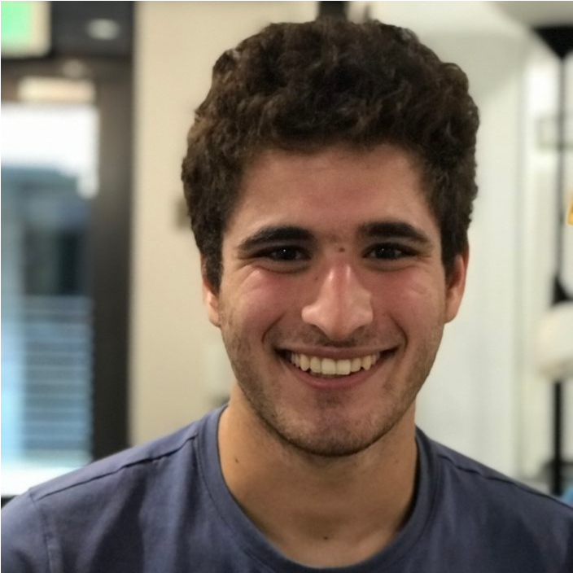
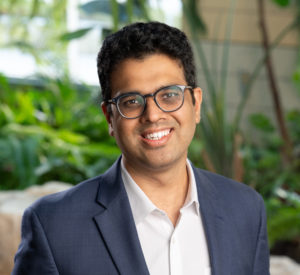
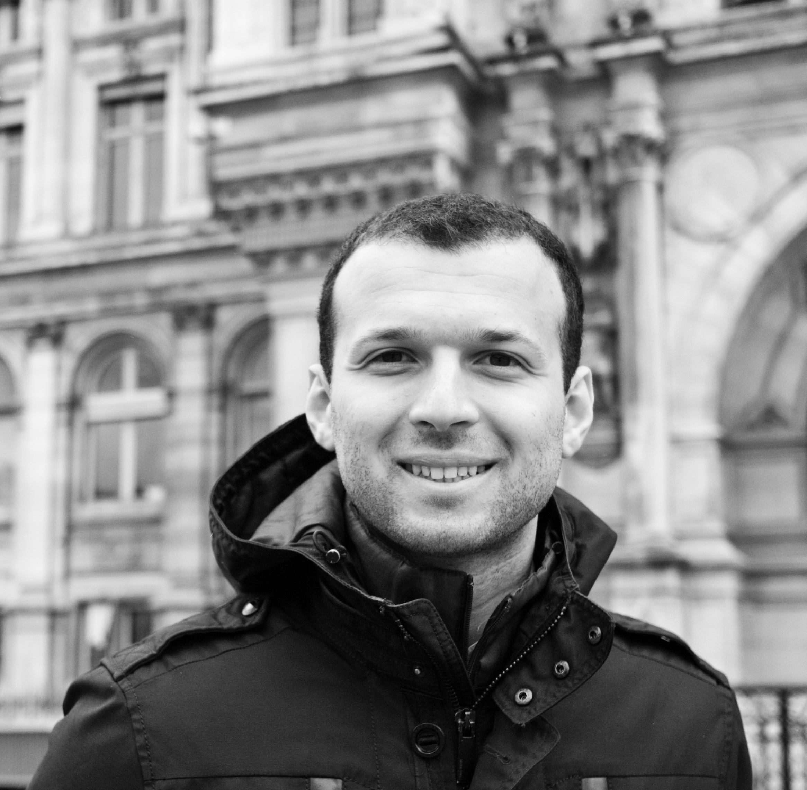

Tutorial on Quantum Circuit Synthesis and Optimization at ASPLOS '25
Overview
It is an exciting time in the world of quantum computing, as we continue to make rapid progress towards practical quantum computation. To realize the full potential of the devices we have today and on the horizon, we need optimizing compilers that convert abstract descriptions of quantum circuits to native device operations. However, quantum architecture deisgn remains in flux, with multiple competing hardware substrates and error-correction protocols.
In this tutorial, we will introduce our efforts at the University of Wisconsin–Madison towards a flexible
and performant compiler for this shifting landscape. We will describe two of the central problems in
compiling quantum circuits to target devices, and the algorithms that we have developed to tackle them.
We begin with quantum circuit optimization, the problem of expressing a quantum circuit in as few native gates as possible.
Then, we turn to qubit mapping and routing, the stage in which a compiler must lay out a circuit onto a device in a way that respects connectivity constraints. No prior background in quantum computing is necessary! By the end of the tutorial attendees will understand the passes that make up quantum circuit compilation, and how to use our compiler wisq to apply them.
When: Sunday March 30th, 14:00-17:30
Where: New York I @ the Postillion Hotel and Convention Centre, Rotterdam, The Netherlands
Schedule
| 14:00-14:30 | Quantum Computing Fundamentals |
| 14:30-15:30 | Quantum Circuit Optimization |
| 15:30-16:00 | Coffee break |
| 16:00-17:00 | Qubit Mapping and Routing |
| 17:00-17:30 | A Practical Tour of our Compiler |
Organizers

Abtin Molavi


Swamit Tannu

Aws Albarghouthi